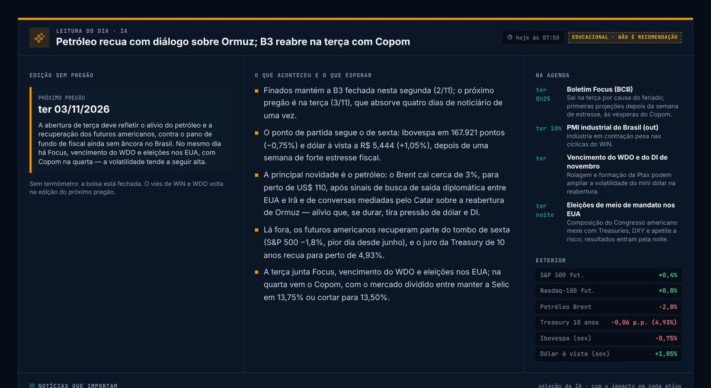
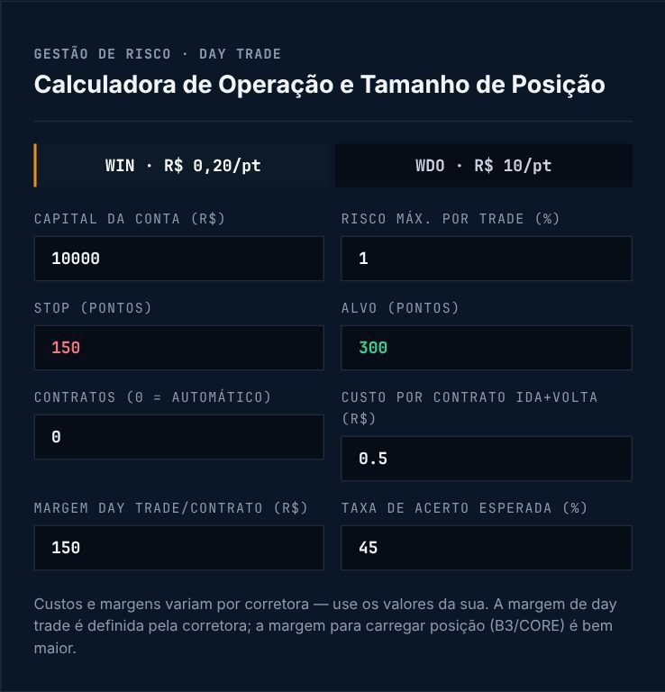
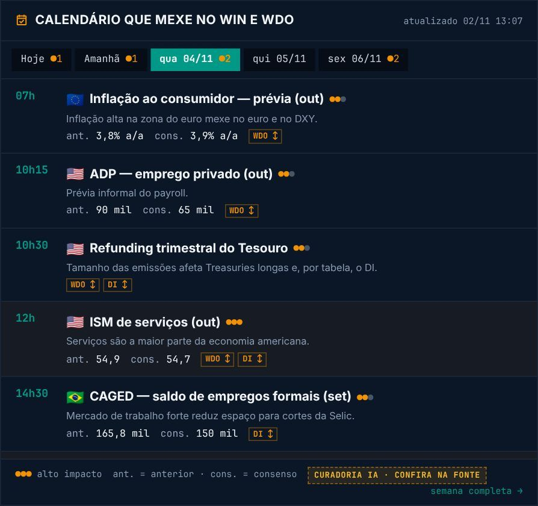

Comece o pregão já sabendo o que importa.
O Lectnex é um terminal gratuito para quem opera mini índice (WIN) e mini dólar (WDO): leitura de mercado todo dia, ferramentas de risco e o calendário que mexe no preço, com dados oficiais e linguagem direta.
- Grátis, sem cadastro
- Dados do Banco Central e fontes oficiais
- Educacional, sem recomendação
Leitura do Dia
Antes da abertura, o resumo do que aconteceu e do que esperar: viés do modelo para WIN e WDO (experimental), agenda com horários, mercado lá fora e as notícias que mexem no preço, cada uma com o impacto em cada ativo. Às 12h40 e 16h40, entram as notícias novas.
Ver a Leitura de hoje
Calculadora de risco
Diga seu capital, o stop e o risco por operação: ela mostra quantos contratos usar, quanto você perde se o stop for atingido e se a conta fecha com a sua taxa de acerto. Disciplina antes do clique.
Calcular minha operação
Calendário que mexe no preço
Só os dados que movem WIN, WDO e juros, em horário de Brasília, com anterior e consenso. Quando sai um número fora do esperado, você recebe o alerta de surpresa no celular ou no Telegram.
Ver a agenda da semana
Seu dia com o Lectnex
- 7h45Leitura do DiaNo site, no seu e-mail e no Telegram.
- 8h45Plano do DiaAviso no celular com o contrato vigente e os dados fortes do dia. No site, defina seu limite de perda e faça o checklist antes de abrir. Abrir o Plano
- Durante o pregãoAlertas de surpresaDado fora do consenso? Aviso na hora, e 15 min antes dos dados fortes.
- 12h40 · 16h40Notícias novasA Leitura ganha as notícias da manhã e da tarde.
- Fim do pregãoFechamento do seu diaResultado, se você seguiu o plano, nota de disciplina e a lição do dia. As operações entram sozinhas no Diário e no DARF do mês. Ver o Diário
- 19h05Fechamento do mercadoComo fecharam Ibovespa e dólar, e se o viés do modelo acertou.
Perguntas rápidas
É grátis mesmo?
Sim. O site, a Leitura por e-mail, o Telegram e os alertas são gratuitos e não pedem cadastro.
Vocês dizem o que comprar ou vender?
Não. O conteúdo é educacional: explica cenário, agenda e riscos para você tomar as suas decisões. Não é recomendação de investimento.
De onde vêm os dados?
Indicadores do Banco Central (Selic, CDI, IPCA, PTAX, Focus), Tesouro Nacional, IBGE e cotações públicas. A Leitura é escrita com IA a partir de fontes jornalísticas confiáveis, sempre com o link de cada notícia.
Funciona no celular?
Sim, e dá para instalar como app: no rodapé do site, toque em “Instalar app no celular” (no iPhone, Compartilhar → Adicionar à Tela de Início).
Operar derivativos envolve alavancagem e risco de perdas superiores ao capital. Conteúdo exclusivamente educacional.